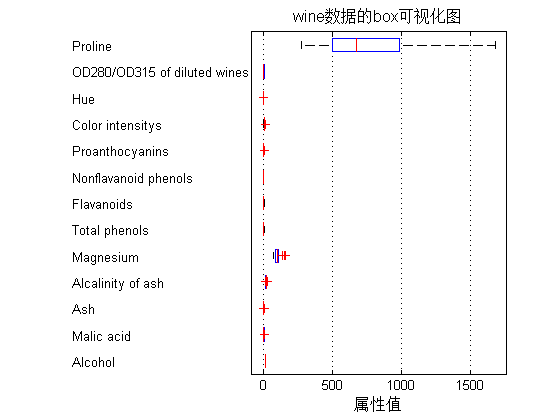
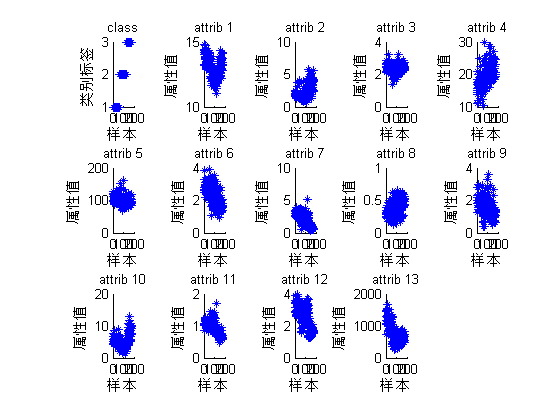
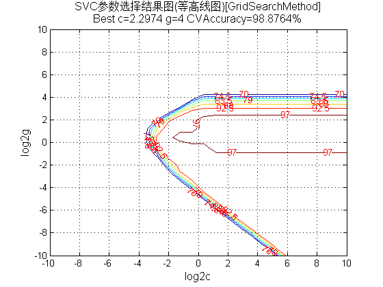
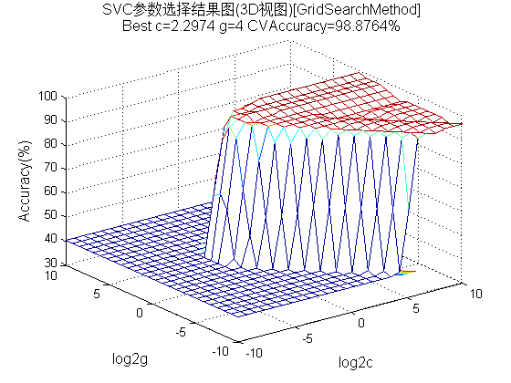
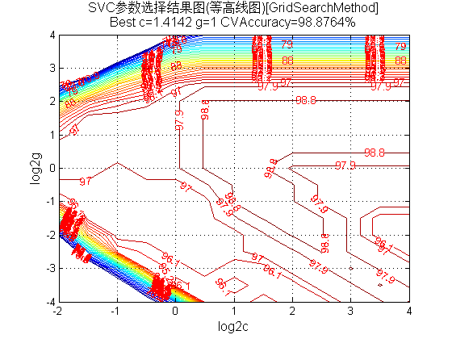
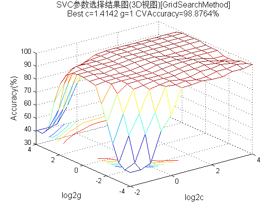
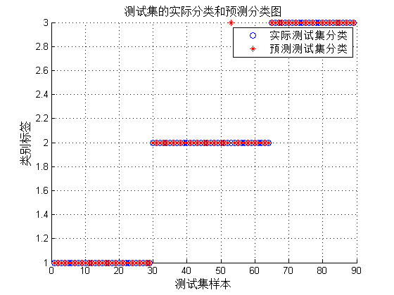

Contents
Matlab神经网络43个案例分析
% SVM的参数优化——如何更好的提升分类器的性能 % by 李洋(faruto) % http://www.matlabsky.com % Email:faruto@163.com % http://weibo.com/faruto % http://blog.sina.com.cn/faruto % 2013.01.01
清空环境变量
function chapter_GridSearch
close all; clear; clc; format compact;
数据提取
% 载入测试数据wine,其中包含的数据为classnumber = 3,wine:178*13的矩阵,wine_labes:178*1的列向量 load wine.mat; % 画出测试数据的box可视化图 figure; boxplot(wine,'orientation','horizontal','labels',categories); title('wine数据的box可视化图','FontSize',12); xlabel('属性值','FontSize',12); grid on; % 画出测试数据的分维可视化图 figure subplot(3,5,1); hold on for run = 1:178 plot(run,wine_labels(run),'*'); end xlabel('样本','FontSize',10); ylabel('类别标签','FontSize',10); title('class','FontSize',10); for run = 2:14 subplot(3,5,run); hold on; str = ['attrib ',num2str(run-1)]; for i = 1:178 plot(i,wine(i,run-1),'*'); end xlabel('样本','FontSize',10); ylabel('属性值','FontSize',10); title(str,'FontSize',10); end % 选定训练集和测试集 % 将第一类的1-30,第二类的60-95,第三类的131-153做为训练集 train_wine = [wine(1:30,:);wine(60:95,:);wine(131:153,:)]; % 相应的训练集的标签也要分离出来 train_wine_labels = [wine_labels(1:30);wine_labels(60:95);wine_labels(131:153)]; % 将第一类的31-59,第二类的96-130,第三类的154-178做为测试集 test_wine = [wine(31:59,:);wine(96:130,:);wine(154:178,:)]; % 相应的测试集的标签也要分离出来 test_wine_labels = [wine_labels(31:59);wine_labels(96:130);wine_labels(154:178)]; 
数据预处理
数据预处理,将训练集和测试集归一化到[0,1]区间
[mtrain,ntrain] = size(train_wine);
[mtest,ntest] = size(test_wine);
dataset = [train_wine;test_wine];
% mapminmax为MATLAB自带的归一化函数
[dataset_scale,ps] = mapminmax(dataset',0,1);
dataset_scale = dataset_scale';
train_wine = dataset_scale(1:mtrain,:);
test_wine = dataset_scale( (mtrain+1):(mtrain+mtest),: );
选择最佳的SVM参数c&g
% 首先进行粗略选择: c&g 的变化范围是 2^(-10),2^(-9),...,2^(10) [bestacc,bestc,bestg] = SVMcgForClass(train_wine_labels,train_wine,-10,10,-10,10); % 打印粗略选择结果 disp('打印粗略选择结果'); str = sprintf( 'Best Cross Validation Accuracy = %g%% Best c = %g Best g = %g',bestacc,bestc,bestg); disp(str); % 根据粗略选择的结果图再进行精细选择: c 的变化范围是 2^(-2),2^(-1.5),...,2^(4), g 的变化范围是 2^(-4),2^(-3.5),...,2^(4), [bestacc,bestc,bestg] = SVMcgForClass(train_wine_labels,train_wine,-2,4,-4,4,3,0.5,0.5,0.9); % 打印精细选择结果 disp('打印精细选择结果'); str = sprintf( 'Best Cross Validation Accuracy = %g%% Best c = %g Best g = %g',bestacc,bestc,bestg); disp(str);
打印粗略选择结果 Best Cross Validation Accuracy = 98.8764% Best c = 2.2974 Best g = 4 打印精细选择结果 Best Cross Validation Accuracy = 98.8764% Best c = 1.41421 Best g = 1   
利用最佳的参数进行SVM网络训练
cmd = ['-c ',num2str(bestc),' -g ',num2str(bestg)]; model = svmtrain(train_wine_labels,train_wine,cmd);
SVM网络预测
[predict_label,accuracy] = svmpredict(test_wine_labels,test_wine,model); % 打印测试集分类准确率 total = length(test_wine_labels); right = sum(predict_label == test_wine_labels); disp('打印测试集分类准确率'); str = sprintf( 'Accuracy = %g%% (%d/%d)',accuracy(1),right,total); disp(str);
Accuracy = 98.8764% (88/89) (classification) 打印测试集分类准确率 Accuracy = 98.8764% (88/89)
结果分析
% 测试集的实际分类和预测分类图 % 通过图可以看出只有三个测试样本是被错分的 figure; hold on; plot(test_wine_labels,'o'); plot(predict_label,'r*'); xlabel('测试集样本','FontSize',12); ylabel('类别标签','FontSize',12); legend('实际测试集分类','预测测试集分类'); title('测试集的实际分类和预测分类图','FontSize',12); grid on; snapnow;
子函数 SVMcgForClass.m
function [bestacc,bestc,bestg] = SVMcgForClass(train_label,train,cmin,cmax,gmin,gmax,v,cstep,gstep,accstep) %SVMcg cross validation by faruto % % by faruto %Email:patrick.lee@foxmail.com QQ:516667408 http://blog.sina.com.cn/faruto BNU %last modified 2010.01.17 %Super Moderator @ www.ilovematlab.cn % 若转载请注明： % faruto and liyang , LIBSVM-farutoUltimateVersion % a toolbox with implements for support vector machines based on libsvm, 2009. % Software available at http://www.ilovematlab.cn % % Chih-Chung Chang and Chih-Jen Lin, LIBSVM : a library for % support vector machines, 2001. Software available at % http://www.csie.ntu.edu.tw/~cjlin/libsvm % about the parameters of SVMcg if nargin < 10 accstep = 4.5; end if nargin < 8 cstep = 0.8; gstep = 0.8; end if nargin < 7 v = 5; end if nargin < 5 gmax = 8; gmin = -8; end if nargin < 3 cmax = 8; cmin = -8; end % X:c Y:g cg:CVaccuracy [X,Y] = meshgrid(cmin:cstep:cmax,gmin:gstep:gmax); [m,n] = size(X); cg = zeros(m,n); eps = 10^(-4); % record acc with different c & g,and find the bestacc with the smallest c bestc = 1; bestg = 0.1; bestacc = 0; basenum = 2; for i = 1:m for j = 1:n cmd = ['-v ',num2str(v),' -c ',num2str( basenum^X(i,j) ),' -g ',num2str( basenum^Y(i,j) )]; cg(i,j) = svmtrain(train_label, train, cmd); if cg(i,j) <= 55 continue; end if cg(i,j) > bestacc bestacc = cg(i,j); bestc = basenum^X(i,j); bestg = basenum^Y(i,j); end if abs( cg(i,j)-bestacc )<=eps && bestc > basenum^X(i,j) bestacc = cg(i,j); bestc = basenum^X(i,j); bestg = basenum^Y(i,j); end end end % to draw the acc with different c & g figure; [C,h] = contour(X,Y,cg,70:accstep:100); clabel(C,h,'Color','r'); xlabel('log2c','FontSize',12); ylabel('log2g','FontSize',12); firstline = 'SVC参数选择结果图(等高线图)[GridSearchMethod]'; secondline = ['Best c=',num2str(bestc),' g=',num2str(bestg), ... ' CVAccuracy=',num2str(bestacc),'%']; title({firstline;secondline},'Fontsize',12); grid on; figure; meshc(X,Y,cg); % mesh(X,Y,cg); % surf(X,Y,cg); axis([cmin,cmax,gmin,gmax,30,100]); xlabel('log2c','FontSize',12); ylabel('log2g','FontSize',12); zlabel('Accuracy(%)','FontSize',12); firstline = 'SVC参数选择结果图(3D视图)[GridSearchMethod]'; secondline = ['Best c=',num2str(bestc),' g=',num2str(bestg), ... ' CVAccuracy=',num2str(bestacc),'%']; title({firstline;secondline},'Fontsize',12);